gpui-ui-kit
A reusable UI component library for GPUI applications.
Provides composable, styled UI components with consistent theming for building desktop applications with the GPUI framework.
Examples
A showcase is provided that demonstrate the capabilities of the library. Here are few examples:
| Buttons | Fonts |
|---|---|
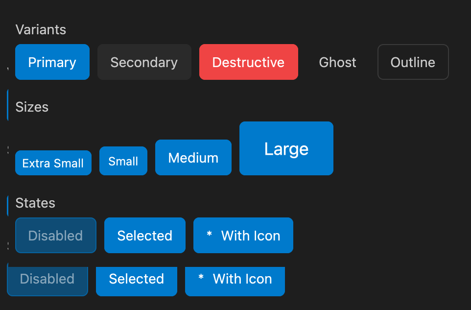 |
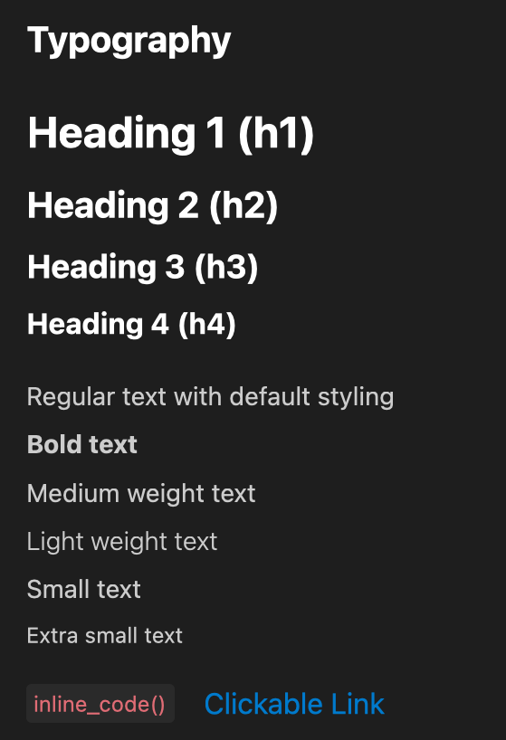 |
| Badges | Avatars |
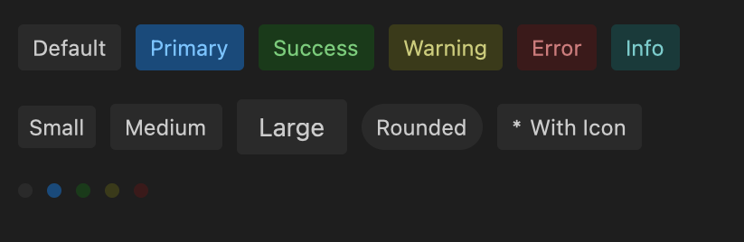 |
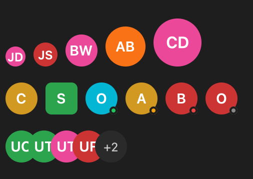 |
| Inputs | Progress |
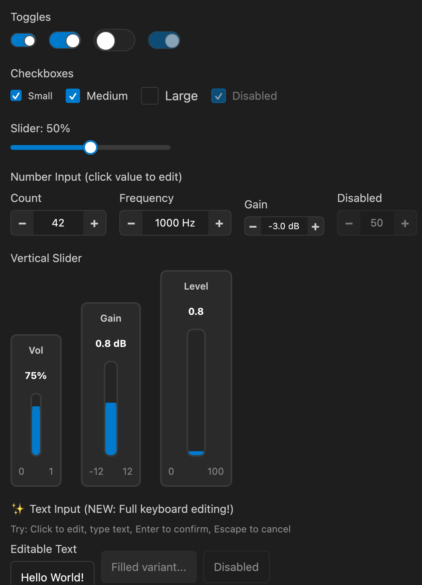 |
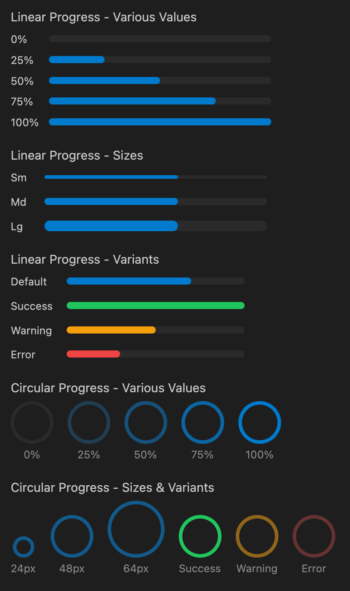 |
| Alerts | |
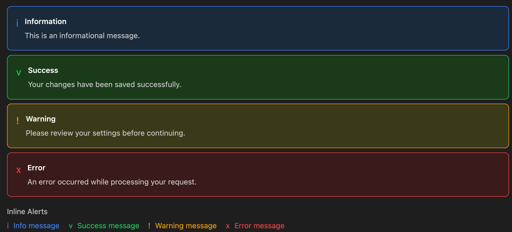 |
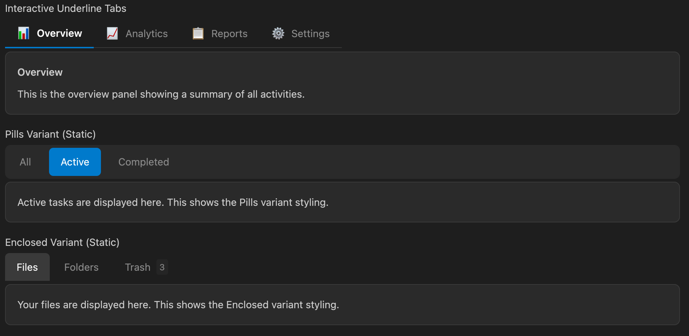 |
| Tabs | Layouts |
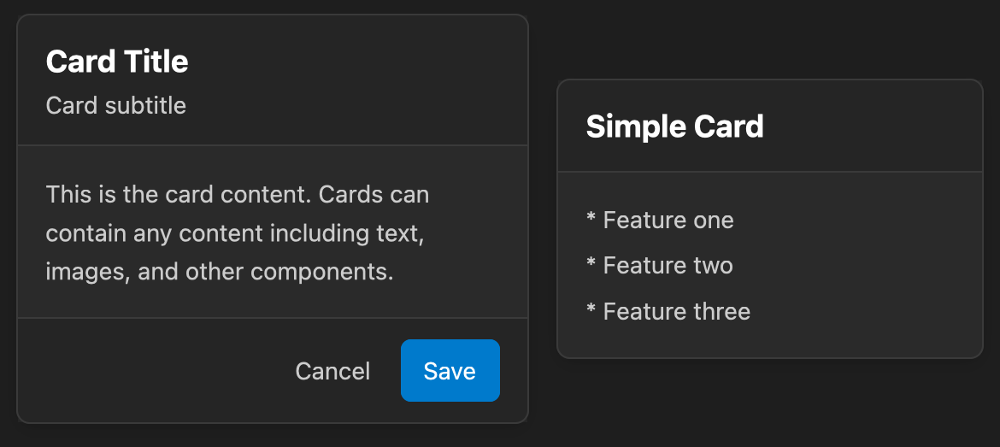 |
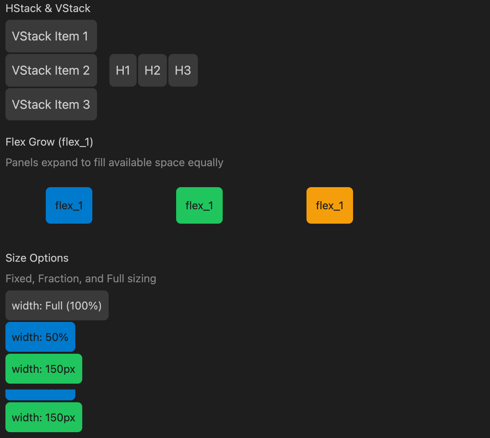 |
| Menus | Potentiometers |
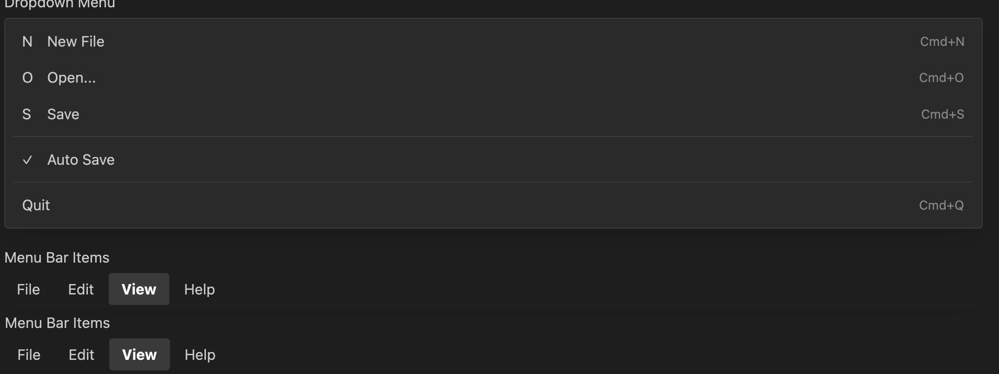 |
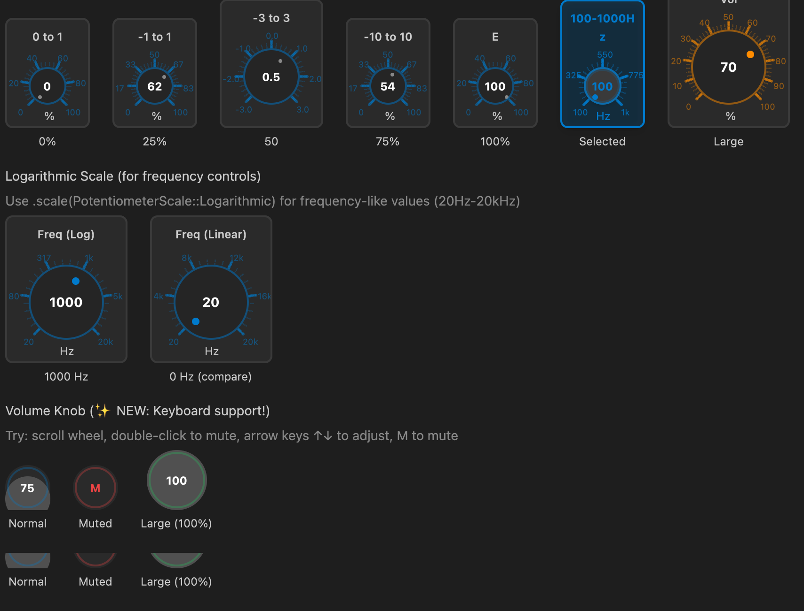 |
| Wizard | Workflow |
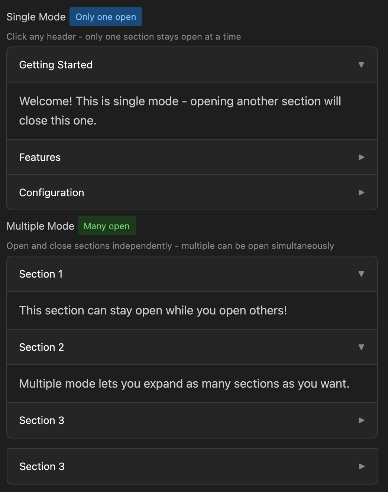 |
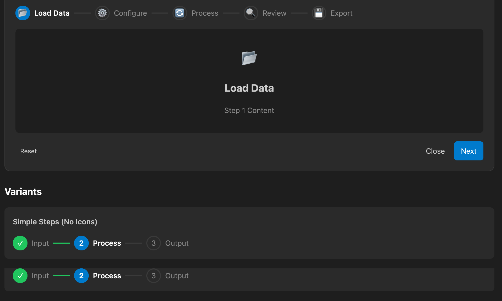 |
Installation
Add to your Cargo.toml:
[dependencies]
gpui-ui-kit = { path = "../gpui-ui-kit" }Components
Core Components
| Component | Description |
|---|---|
Button |
Styled button with variants (Primary, Secondary, Destructive, Ghost, Outline) |
IconButton |
Icon-only button with hover states |
Card |
Container with optional header, content, and footer sections |
Dialog |
Modal dialog with backdrop, title, and customizable size |
Menu / MenuBar |
Navigation menus and menu bars |
Tabs |
Tabbed navigation with Underline, Enclosed, and Pills variants |
Toast / ToastContainer |
Notification toasts with positioning |
Form Components
| Component | Description |
|---|---|
Input |
Text input with label, placeholder, validation, mouse drag selection, clipboard (Cmd+C/V/X), and Emacs keybindings |
NumberInput |
Numeric input with +/- buttons, min/max bounds, step size, scroll wheel support, and keyboard navigation |
Checkbox |
Checkbox with label and indeterminate state |
Toggle |
Toggle switch |
Select |
Dropdown select with options |
ButtonSet |
Grouped button options for single selection |
ColorPicker |
Color picker with palette and custom color input |
Slider |
Horizontal slider with value display |
Wizard |
Multi-step wizard with navigation and step validation |
Data Display
| Component | Description |
|---|---|
Badge / BadgeDot |
Status badges with variants |
Progress / CircularProgress |
Progress bars and circular indicators |
Spinner / LoadingDots |
Loading indicators |
Avatar / AvatarGroup |
User avatars with status indicators |
Text / Heading / Code / Link |
Typography components |
Feedback
| Component | Description |
|---|---|
Alert / InlineAlert |
Contextual feedback messages (Info, Success, Warning, Error) |
Tooltip |
Hover tooltips with placement options |
Layout
| Component | Description |
|---|---|
VStack / HStack |
Vertical and horizontal stack layouts |
Spacer |
Flexible spacer element |
Divider |
Horizontal/vertical dividers with optional interactivity |
PaneDivider |
Resizable pane divider for split views |
Accordion |
Collapsible content panels |
Breadcrumbs |
Navigation breadcrumbs |
Audio Controls
| Component | Description |
|---|---|
Potentiometer |
Rotary knob control with customizable range and visual feedback |
VerticalSlider |
Vertical slider with ticks and value display |
VolumeKnob |
Specialized volume control with mute state and dB display |
Usage Examples
Card
use gpui_ui_kit::Card;
use gpui::div;
Card::new()
.header(div().child("Card Title"))
.content(div().child("Card content goes here"))
.footer(
div().flex().gap_2()
.child(Button::new("cancel", "Cancel").variant(ButtonVariant::Ghost))
.child(Button::new("save", "Save"))
)Input
use gpui_ui_kit::{Input, InputSize, InputVariant};
// Basic input with label
Input::new("email")
.label("Email")
.placeholder("Enter your email")
// Input with error
Input::new("username")
.label("Username")
.value("invalid!")
.error("Username contains invalid characters")
// Filled variant with icon
Input::new("search")
.variant(InputVariant::Filled)
.placeholder("Search...")
.icon_left("🔍")
// Input with change callback
Input::new("name")
.label("Name")
.on_change(|value, window, cx| {
println!("Input changed: {}", value);
})Input Features: - Mouse drag selection: Click and drag to select text ranges - Double-click: Select all text - Clipboard: Cmd+C (copy), Cmd+V (paste), Cmd+X (cut), Cmd+A (select all) - Emacs keybindings: Ctrl+A (beginning), Ctrl+E (end), Ctrl+K (kill to end), Ctrl+U (kill to beginning) - Navigation: Arrow keys, Home/End, Backspace/Delete
NumberInput
use gpui_ui_kit::{NumberInput, NumberInputSize};
// Basic number input
NumberInput::new("quantity")
.label("Quantity")
.value(10.0)
.min(0.0)
.max(100.0)
.step(1.0)
// Number input with decimals and units
NumberInput::new("frequency")
.label("Frequency")
.value(1000.0)
.min(20.0)
.max(20000.0)
.step(10.0)
.decimals(1)
.unit("Hz")
.width(120.0)
.on_change(|value, window, cx| {
println!("Frequency: {} Hz", value);
})
// Compact size for dense layouts
NumberInput::new("gain")
.value(0.0)
.min(-12.0)
.max(12.0)
.step(0.5)
.decimals(1)
.unit("dB")
.size(NumberInputSize::Sm)NumberInput Features: - +/- buttons: Click to increment/decrement by step size - Click to edit: Click the value to enter edit mode - Double-click: Select all text in edit mode - Scroll wheel: Scroll up/down to adjust value - Arrow keys: Up/Down to adjust value when focused - Bounds enforcement: Values clamped to min/max range
Tabs
use gpui_ui_kit::{Tabs, TabItem, TabVariant};
Tabs::new()
.tabs(vec![
TabItem::new("general", "General").icon("⚙"),
TabItem::new("audio", "Audio").icon("🔊"),
TabItem::new("video", "Video").icon("🎬").badge("New"),
])
.selected_index(0)
.variant(TabVariant::Underline)
.on_change(|index, window, cx| {
println!("Selected tab: {}", index);
})Dialog
use gpui_ui_kit::{Dialog, DialogSize};
use gpui::div;
Dialog::new("confirm-dialog")
.title("Confirm Action")
.size(DialogSize::Md)
.content(div().child("Are you sure you want to proceed?"))
.footer(
div().flex().gap_2().justify_end()
.child(Button::new("cancel", "Cancel").variant(ButtonVariant::Ghost))
.child(Button::new("confirm", "Confirm"))
)
.on_close(|window, cx| {
// Handle dialog close
})Alert
use gpui_ui_kit::{Alert, AlertVariant, InlineAlert};
// Full alert with title
Alert::new("error-alert", "Something went wrong. Please try again.")
.title("Error")
.variant(AlertVariant::Error)
.closeable(true)
.on_close(|window, cx| {
// Dismiss alert
})
// Inline alert
InlineAlert::new("Operation completed successfully")
.variant(AlertVariant::Success)Stack Layouts
use gpui_ui_kit::{VStack, HStack, Spacer, Divider, StackSpacing, StackAlign};
// Vertical stack
VStack::new()
.spacing(StackSpacing::Lg)
.align(StackAlign::Center)
.child(Text::new("Title").size(TextSize::Xl))
.child(Text::new("Subtitle"))
.child(Spacer::new())
.child(Button::new("action", "Action"))
// Horizontal stack with divider
HStack::new()
.spacing(StackSpacing::Md)
.child(Button::new("a", "Option A"))
.child(Divider::vertical())
.child(Button::new("b", "Option B"))Progress
use gpui_ui_kit::{Progress, CircularProgress, ProgressVariant, ProgressSize};
// Linear progress bar
Progress::new(75.0)
.variant(ProgressVariant::Success)
.size(ProgressSize::Md)
.show_label(true)
// Circular progress
CircularProgress::new(60.0)
.size(px(64.0))
.variant(ProgressVariant::Default)
.show_label(true)Checkbox and Toggle
use gpui_ui_kit::{Checkbox, Toggle, CheckboxSize, ToggleSize};
// Checkbox with label
Checkbox::new("agree")
.label("I agree to the terms")
.checked(true)
.on_change(|checked, window, cx| {
println!("Checked: {}", checked);
})
// Toggle switch
Toggle::new("notifications")
.label("Enable notifications")
.checked(false)
.size(ToggleSize::Md)Select
use gpui_ui_kit::{Select, SelectOption, SelectSize};
Select::new("theme-select")
.label("Theme")
.placeholder("Choose a theme")
.options(vec![
SelectOption::new("light", "Light"),
SelectOption::new("dark", "Dark"),
SelectOption::new("system", "System").disabled(true),
])
.selected("dark")
.on_change(|value, window, cx| {
println!("Selected: {}", value);
})Avatar
use gpui_ui_kit::{Avatar, AvatarGroup, AvatarSize, AvatarStatus};
// Single avatar with status
Avatar::new("user-1")
.initials("JD")
.size(AvatarSize::Lg)
.status(AvatarStatus::Online)
// Avatar group
AvatarGroup::new()
.avatars(vec![
Avatar::new("u1").initials("AB"),
Avatar::new("u2").initials("CD"),
Avatar::new("u3").initials("EF"),
])
.max_visible(3)Tooltip
use gpui_ui_kit::{Tooltip, TooltipPlacement, WithTooltip};
// Wrap any element with a tooltip
WithTooltip::new(
Button::new("help", "?").variant(ButtonVariant::Ghost),
Tooltip::new("Click for help").placement(TooltipPlacement::Bottom)
)Accordion
use gpui_ui_kit::{Accordion, AccordionItem, AccordionMode};
use gpui::div;
Accordion::new("faq")
.mode(AccordionMode::Single)
.items(vec![
AccordionItem::new("q1", "What is GPUI?")
.content(div().child("GPUI is a GPU-accelerated UI framework.")),
AccordionItem::new("q2", "How do I install it?")
.content(div().child("Add it to your Cargo.toml dependencies.")),
])Potentiometer
use gpui_ui_kit::{Potentiometer, PotentiometerSize};
// Basic rotary knob
Potentiometer::new("volume")
.value(0.75)
.min(0.0)
.max(1.0)
.size(PotentiometerSize::Md)
.on_change(|value, window, cx| {
println!("Volume: {:.0}%", value * 100.0);
})
// With label and units
Potentiometer::new("pan")
.label("Pan")
.value(0.0)
.min(-1.0)
.max(1.0)
.unit("L/R")VerticalSlider
use gpui_ui_kit::{VerticalSlider, VerticalSliderSize};
VerticalSlider::new("fader")
.value(0.0)
.min(-60.0)
.max(12.0)
.height(200.0)
.show_ticks(true)
.on_change(|value, window, cx| {
println!("Level: {:.1} dB", value);
})VolumeKnob
use gpui_ui_kit::{VolumeKnob, VolumeKnobSize};
VolumeKnob::new("master-volume")
.value(0.8)
.muted(false)
.size(VolumeKnobSize::Lg)
.on_change(|value, window, cx| {
println!("Volume: {:.0}%", value * 100.0);
})
.on_mute_toggle(|muted, window, cx| {
println!("Muted: {}", muted);
})Wizard
use gpui_ui_kit::{Wizard, WizardStep, WizardStepStatus};
use gpui::div;
Wizard::new("setup-wizard")
.steps(vec![
WizardStep::new("welcome", "Welcome")
.status(WizardStepStatus::Completed)
.content(div().child("Welcome to the setup wizard!")),
WizardStep::new("config", "Configuration")
.status(WizardStepStatus::Current)
.content(div().child("Configure your settings here.")),
WizardStep::new("finish", "Finish")
.status(WizardStepStatus::Pending)
.content(div().child("Setup complete!")),
])
.current_step(1)
.on_next(|step, window, cx| {
println!("Moving to step: {}", step);
})
.on_back(|step, window, cx| {
println!("Going back to step: {}", step);
})Theming
Components use a default dark theme. Button theme can be customized:
use gpui_ui_kit::{Button, ButtonTheme};
use gpui::rgb;
let custom_theme = ButtonTheme {
accent: rgb(0x6366f1), // Indigo accent
accent_hover: rgb(0x818cf8),
surface: rgb(0x374151),
surface_hover: rgb(0x4b5563),
text_primary: rgb(0xffffff),
text_secondary: rgb(0xd1d5db),
error: rgb(0xef4444),
border: rgb(0x6b7280),
};
Button::new("themed", "Themed Button")
.theme(custom_theme)Design Patterns
Builder Pattern
All components use the builder pattern for configuration:
Component::new(required_args)
.optional_setting(value)
.another_setting(value)
// Either render directly or build for additional handlersEvent Handlers
Components that support interaction accept closures:
Button::new("btn", "Click")
.on_click(|window, cx| {
// Handle click
})
Checkbox::new("cb")
.on_change(|checked, window, cx| {
// Handle change
})Using with GPUI Listeners
For components that need cx.listener(), use the build() method:
Button::new("btn", "Save")
.build()
.on_click(cx.listener(|this, _event, window, cx| {
this.save(cx);
}))Testing
The library includes a comprehensive test suite to prevent regressions:
# Run all tests
cargo test --lib --tests
# Run specific test suite
cargo test --test i18n_tests # Translation coverage
cargo test --test component_tests # Component API tests
# Setup git hooks for automatic testing
./scripts/setup-hooks.shTest Coverage: - ✅ Integration Tests (237 tests): Comprehensive UI component tests including mouse actions, button clicks, keyboard navigation, and visual rendering - ✅ Interaction Tests (37 tests): Verify all stateful components support mouse and keyboard events - ✅ Component Tests (15 tests): Ensure component APIs work correctly and configurations are valid - ✅ I18n Tests (11 tests): Verify all translations exist across 5 languages (English, French, German, Spanish, Japanese) - ✅ Library Tests (10 tests): Verify MiniApp configuration and utilities - ✅ 310 total tests covering critical functionality
See TESTING.md for detailed testing guide and tests/README.md for quick reference.
Development
Running the Showcase
cargo run --example showcaseThe showcase demonstrates all components with: - Interactive examples for each component - Theme switching (Light/Dark) - Language switching (5 languages) - Navigation sidebar
Before Committing
# Format code
cargo fmt
# Run tests
cargo test --lib --tests
# Run clippy
cargo clippy --all-targets -- -D warningsOr setup git hooks to run automatically:
./scripts/setup-hooks.shLicense
See workspace root for license information.